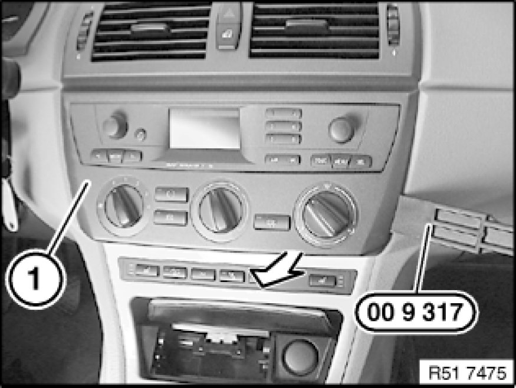

51 45 106 - Removing and installing/replacing function carrier on instrument panel trim
51 45 106 - Removing and installing/replacing function carrier on instrument panel trim

Special tools required:
- 00 9 317 00 9 317 Trim Panel Wedge

Necessary preliminary tasks:
Version with automatic transmission:
- Remove trim for preselector lever 51 16 210 Removing and Installing/Replacing Trim For Preselector Lever
Version with manual transmission:
- Remove gaiter for gear lever Replacing Gaiter (Shift Lever Cover) for Shift Lever
Lever out retainers (1) in direction of arrow and remove.

Unclip trim (1) with special tool 00 9 317 00 9 317 Trim Panel Wedge in lower area only.
Release screws (1) on trim (2).
Release screws (1) and pull trim (2) forwards slightly.
Depending on version, disconnect plug connections (1 and 2) and remove trim (3).
Replacement:
Remove switch unit in center console Removing and Installing/Replacing Switch Unit in Center Console.